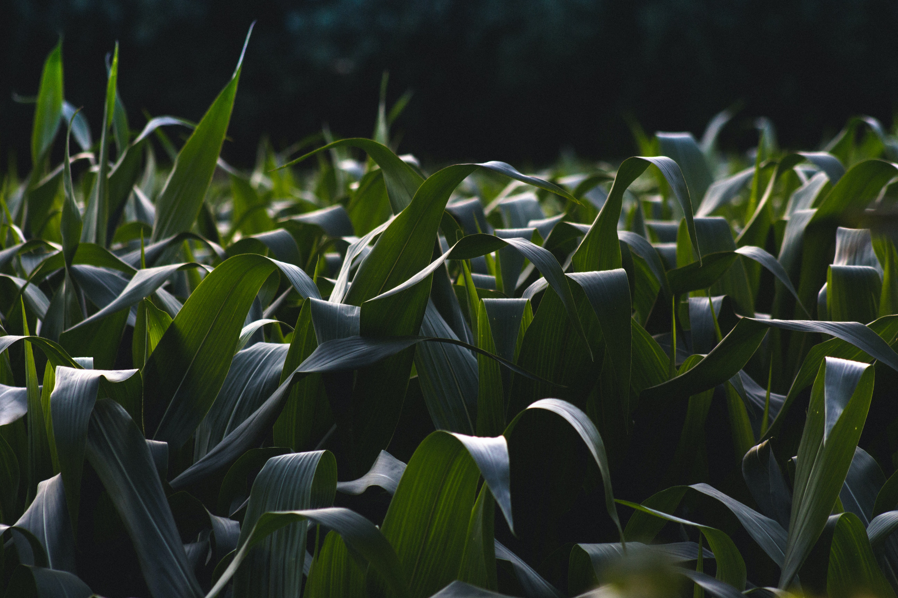

Der Spitzwegerisch, aus der Familie der Wegeriche ist eine Kräuterpflanze welche oft an Wegrändern, Wiesen und
Äckern zu finden ist. Seine Hauptblütezeit liegt zwischen Mai und September. Besonders auffällig sind die lang
fliegenden Pollen

Gräser (lat. Pales):
Die Gräserpollen–Allergie gehört zu den häufigsten Pollenallergien. Zwar sind nicht alle Gräser in der Lage,
Allergien auszulösen, aber insbesondere die Pollen von Süßgräsern gehören zu den Allergenen die Symptome
verursachen können.
Es gibt etliche Unterarten bei Süßgräsern
Beifuß (lat. Artemisia vulgaris)
Der Beifuss stammt aus der Familie der Korbblütter und kommt in Europa in den Arten Artemisia vulgaris var.
vulgaris und Artemisia vulgaris vor. Zu finden sind sie oft an Wegrändern und im Ödland. Die Hauptblütezeit
liegt zwischen Juli und September.
Was ist eine Pollenallergie ?
Etwa 12 Millionen Menschen leiden in Deutschland an Heuschnupfen (14,8 Prozent).
Bemerkbar macht sich der Heuschnupfen typischerweise vor dem 25. Lebensjahr – meistens bei Kindern zwischen dem
8. und 16. Lebensjahr.
Inzwischen entwickeln aber auch immer mehr Menschen jenseits der 50 erstmalig eine Pollenallergie.
Verursacher der Allergie ist der Pollen bzw. der Blütenstaub windbestäubter
Pflanzen.
Er besteht aus einzelnen Pollenkörnen, die das männliche Erbgut enthalten.
Bei manchen Allergien genügen bereits wenige Pollenkörner, um eine heftige Reaktion auszulösen.
Die wesentlichsten allergieauslösenden Pollen stammen von Bäumen, Gräsern und
Kräutern.
Der Pollen enthält wasserlösliche Proteine (Eiweiße), die bei Kontakt mit den
Schleimhäuten freigesetzt werden.
Im Falle einer Allergie reagiert das Immunsystem auf die eigentlich harmlosen Proteine mit der Bildung von
IgE-Antikörpern.
Diese binden an Abwehrzellen des Körpers, sogenannte Mastzellen, die daraufhin entzündungsauslösende Stoffe wie
Histamin freisetzen.
Das Histamin und die anderen Botenstoffe stimulieren Drüsen zur Abgabe von Sekret, reizen Nerven und verursachen
dadurch Juck- und Niesreiz und
bewirken eine Gefäßerweiterung, die zur Rötung und Schwellung der Schleimhäute führt.
Dies ist die Ursache der Symptome an denen viele Menschen mit einer Pollenallergie leiden.
Wir von Pollenradar hoffen durch präventive Aufklärung über Pollenflüge das Leben
mit solch einer Allergie einfacher zu gestalten.